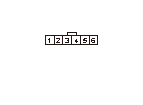
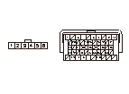

Sモード スイッチ回路故障診断
Sモード スイッチ回路の点検
1-1
セレクト レバーを取外す
1-2
イグニッション スイッチをON（
II
）にする
1-3
Sモード スイッチ/シフト ポジション インジケータ パネル ライト/パーキング ピン スイッチ ハーネス カプラのNo.5とNo.6端子間の電圧を測定する
◆ 約5Vか
YES
-
Sモード スイッチの点検を行う
NO
-
ステップ
2
へ進む

Sモード スイッチ アース回路の断線点検
2-1
Sモード スイッチ/シフト ポジション インジケータ パネル ライト/パーキング ピン スイッチ ハーネス カプラのNo.5端子とボディ アース間の電圧を測定する
◆ 約5Vか
YES
-
Sモード スイッチ/シフト ポジション インジケータ パネル ライト/パーキング ピン スイッチ ハーネス カプラのNo.5端子とアース（G502）間のコードの断線、またはアース（G502）の不良
NO
-
ステップ
3
へ進む
SSW回路の断線点検
3-1
イグニッション スイッチをOFFにする
3-2
HDSでSCS回路の短絡を行う
3-3
PGM-FI ECUカプラA（49P）の接続を外す
3-4
PGM-FI ECUカプラA（49P）のNo.43端子とSモード スイッチ/シフト ポジション インジケータ パネル ライト/パーキング ピン スイッチ ハーネス カプラのNo.5端子間の導通を点検する
◆ 導通があるか
YES
-
ステップ
4
へ進む
NO
-
PGM-FI ECUカプラA（49P）のNo.43端子とSモード スイッチ/シフト ポジション インジケータ パネル ライト/パーキング ピン スイッチ ハーネス カプラのNo.5端子のコードの断線

SSW回路の短絡点検
4-1
Sモード スイッチ/シフト ポジション インジケータ パネル ライト/パーキング ピン スイッチ ハーネス カプラのNo.5端子とボディ アース間の導通を点検する
◆ 導通があるか
YES
-
PGM-FI ECUカプラA（49P）のNo.43端子とSモード スイッチ/シフト ポジション インジケータ パネル ライト/パーキング ピン スイッチ ハーネス カプラのNo.5端子間のコードの短絡
NO
-
PGM-FI ECUカプラの接続状態を確認し、異常がなければ
新品のPGM-FI ECUに交換して
再点検する